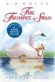
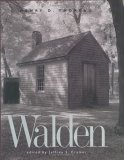
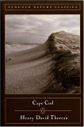
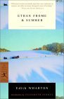

Exploring Massachusetts
Massachusetts abounds with a great mix of fun and educational options, both indoors and out. We provide URLs and in some cases phone numbers for the following well-known and not-so-well-known options to explore, for easy planning from your armchair. In all cases, call first to confirm hours and cost.
Exploring Massachusetts Outdoors
Get outside and enjoy Massachusetts in the rough! Research the habitat that is unique to your part of Massachusetts. Bring a sketch pad or notebook to record your thoughts and impressions. Some great places to explore are:
-
Massachusetts Audubon Sanctuaries
http://www.massaudubon.org/Nature_Connection/sanctuaries.php
MAS wildlife sanctuaries throughout the state protect important habitat for wildlife, most are open to the public and provide a variety of opportunities for you to enjoy nature. MAS sanctuaries represent some of the most spectacular habitats in Massachusetts, ranging from beaches and salt marshes on Cape Cod to woodlands and mountains in the Berkshires.
-
Massachusetts State Parks
http://www.mass.gov/eea/agencies/dcr/massparks/Parks are searchable by recreational opportunity (historic sites, playgrounds, bike paths, nature trails, etc.)
-
Trustees of Reservations properties
http://www.thetrustees.org/
"To preserve, for public use and enjoyment, properties of exceptional scenic, historic, and ecological value in Massachusetts."
-
National Parks
such as Boston Harbor Islands http://www.bostonharborislands.org/ and the Cape Cod National Seashore http://www.nps.gov/caco/
-
Your own backyard!
See One Small Square Backyard by Donald M. Silver for inspiration.
Exploring from Literary Jumping Off Points
| Read Make Way for Ducklings by Robert McCloskey and then stroll through the Public Garden in Boston and find the duck statues. |
|
| Read The Midnight Ride of Paul Revere by Henry Wadsworth Longfellow, and then visit the Paul Revere House and Old North Church in Boston, and track Revere's ride http://www.paulreverehouse.org/ride/ to the capture site in Minute Man National Park. Visit Longfellow National Historic Site in Cambridge along the way. Henry rests in Mount Auburn Cemetery in Cambridge. |
|
|  | Read The Trumpet of the Swan by E. B. White, ride a Swan Boat in the Public Garden, then treat yourself to afternoon tea. |
 |
Read Johnny Tremain by Esther Forbes. Then walk the Freedom Trail and visit the Paul Revere House. |
 |
Read Little Women by Louisa May Alcott, and then visit Orchard House and/ or The Wayside and Sleepy Hollow Cemetery in Concord. |
|  | Read Walden or Civil Disobedience by Henry David Thoreau and then visit the Concord Museum, Walden Pond, and Sleepy Hollow Cemetery in Concord. Find information on Henry David Thoreau here http://www.thoreausociety.org/. If it's warm, bring a swimsuit for a bracing dip in Walden Pond. |
Or try the graphic version. |
|
Or the picture book. |
|
|  | Read Thoreau's Cape Cod and visit the Cape Cod National Seashore http://www.nps.gov/caco/ |
| Read Henry Beston's The Outermost House and visit Coast Guard Beach in Eastham http://www.nps.gov/caco/planyourvisit/coast-guard-beach-eastham.htm |
|
| Read Moby Dick by Herman Melville and visit Arrowhead in Pittsfield, MA and/or the Seamen's Bethel and the New Bedford Whaling Museum in New Bedford. |
|
| Read Emily by Michael Bedard, or The Mouse of Amherst by Elizabeth Spires, or Lives Like Loaded Guns by Lyndall Gordon or Final Harvest: Poems by Emily Dickinson and visit the Emily Dickinson Museum in Amherst http://www.emilydickinsonmuseum.org/. |
|
| Read Carry On, Mr. Bowditch by Jean Lee Latham and visit Salem (see below) and Mount Auburn Cemetery in Cambridge http://www.mountauburn.org/ |
|
| Read The House of the Seven Gables and visit it in Salemhttp://www.7gables.org/, or for more on Nathaniel Hawthorrne, visit the Old Manse http://www.thetrustees.org/pages/346_old_manse.cfm and/or The Wayside http://www.nps.gov/nr/travel/pwwmh/ma47.htm. |
|
| Read The Crucible by Arthur Miller and visit Salem (see below). |
|
| Read Five Little Peppers and How They Grew by Margaret Sydney and visit The Wayside http://www.nps.gov/nr/travel/pwwmh/ma47.htm. |
|
| Read and/or watch the movie of The Age of Innocence and/or The House of Mirth by Edith Wharton and visit The Mount http://www.edithwharton.org/ |
|
|  | Read Ethan Frome and/or Summer by Edith Wharton and visit The Mount http://www.edithwharton.org/ |
| Like the literary idea? Check out Literary Trail of Greater Boston: A Tour of Sites in Boston, Cambridge and Concord by Susan Wilson for many more ideas. |
A sprinkling of places to explore various facets of Massachusetts history
Boston
Boston African American National Historic Site
http://www.afroammuseum.org/; Telephone: 617-725 0022; Transport: Park Street subway station on the Red Line.
The Museum of Afro-American History is dedicated to preserving, conserving and accurately interpreting the contributions of African Americans in New England from the colonial period through the 19th century.
The Commonwealth Museum and State Archives
220 Morrissey Boulevard, Boston, MA 02125
(617) 727-9268
http://www.sec.state.ma.us/mus/index.html
Collection related to Massachusetts history, George Washington, the Civil War, and the archaeology of the Big Dig in Boston. The museum offers field trips for school groups and workshops for teachers.
Faneuil Hall & Quincy Market
http://www.faneuilhallmarketplace.com/
National Park Service Rangers offer historical talks every half hour in Fanueil Hall (except when the hall is closed for city sponsored events). For more information call (617) 242-5675.
Freedom Trail
Free. http://www.thefreedomtrail.org/; Transport: Park Street subway station on the Red Line. Printable map: http://www.iboston.org/pap/freedom.htm. Free tours of the Freedom Trail from the Boston National Historic Park Visitor Center, 15 State Street, 617-242-5642. You can take a ferry from Long Wharf to the Charlestown Navy Yard instead of walking. See http://www.mbta.com/schedules_and_maps/boats/lines/?route=F4.
The Old North Church
http://www.oldnorth.com/
It was from the steeple of the Old North Church that the two lanterns closely associated with Paul Revere were hung by Robert Newman, Church sexton, on April 18, 1775, igniting the War for Independence and leading to the birth of our Nation.
Paul Revere House
http://www.paulreverehouse.org/; Telephone: 617-523-2338; Transport: Green Line to Haymarket station; on the Freedom Trail in Boston's North End, follow the signs and the red line on the sidewalks. Ten minutes from Faneuil Hall / Quincy Market.
On the night of April 18, 1775, silversmith Paul Revere left his small wooden home in Boston's North End and set out on a journey that would make him into a legend. Today that home is still standing at 19 North Square and has become a national historic landmark. It is downtown Boston's oldest building and one of the few remaining from an early era in the history of colonial America.
Public Garden
Free; http://www.friendsofthepublicgarden.org/; Transport: Green Line to Arlington station.
The beauty of the Boston Public Garden lies in the Lagoon, Swan Boats, sculpture, fountains, flower beds, and its notable trees.
Swan Boats
http://www.swanboats.com/; Telephone: 617-522-1966; Transport: Arlington Street subway station on the Green Line. Open April - September. The Swan Boats driver paddles passengers around the Public Garden Lagoon for a 15 minute peaceful cruise.
Back to top
Museum of Fine Arts
http://www.mfa.org/; Telephone: 617-267-9300; Transport: Museum of Fine Arts stop on the Green Line "E" train. The new Art of the Americas wing showcases art of the ancient Americas and Native American art from the prehistoric era to the present, as well as early American art produced primarily in New England and the Northeast. Visitors can also see five period rooms from Oak Hill, a circa 1800-01 mansion featuring the work of the Salem architect and carver Samuel McIntire.
Cambridge
Longfellow National Historic Site
http://www.nps.gov/long/; Telephone: 617-876-4491. Transport: Harvard stop on the Red Line or #77 bus from Arlington.
Longfellow National Historic Site preserves the home of Henry Wadsworth Longfellow, one of the world’s foremost 19th century poets. The house also served as headquarters for General George Washington during the Siege of Boston, July 1775 - April 1776. In addition to its rich history, the site offers unique opportunities to explore the themes of 19th century literature and the arts.
Mount Auburn Cemetery
http://www.mountauburn.org/; Telephone: 617-547-7105 Transport: Watertown Square or Waverley Square bus (#71 or #73). Get off on Mount Auburn Street at Aberdeen Avenue. Cross Mount Auburn Street to the Entrance Gate.
Mount Auburn Cemetery has been designated a National Historic Landmark by the Department of the Interior, recognizing it as one of the country's most significant cultural landscapes.
Concord
The Concord Museum
http://www.concordmuseum.org/; Telephone: 978-369-9763
Concord, Massachusetts is a community rich in historical association, renowned as the site of the battle that began the American Revolution and as the home of the most original thinkers and writers of the American literary renaissance. The Concord Museum is the one place where all of Concord's remarkable past is brought to life - Algonkians, Puritans, Revolutionaries, Loyalists, Farmers, Silversmiths, Transcendentalists, Cabinetmakers, Anti-Slavery Activists, Mill-Workers. Free parking. 200 Lexington Road, Concord, MA.
North Bridge
http://www.nps.gov/mima/planyourvisit/placestogo.htm
Site of “the shot heard ‘round the world.”
The Old Manse
http://www.thetrustees.org/pages/346_old_manse.cfm; Telephone: 978-369-3909.
"Between two tall gateposts of roughhewn stone . . . we behold the gray front of the old parsonage, terminating the vista of an avenue of black ash trees." So begins Mosses from an Old Manse, the set of short stories Nathaniel Hawthorne wrote while living at The Old Manse. The landscape Hawthorne describes is still recognizable to a present-day visitor more than 160 years later.
Orchard House
http://www.louisamayalcott.org/; Telephone: 978-369-4118.
The historic home of the extraordinary Alcott family, where Louisa May Alcott
wrote and set Little Women!
Sleepy Hollow Cemetery
Free. http://www.concordnet.org/Pages/ConcordMA_Cemetery/sleepy; Telephone: 978- 318-3233.
Perched on the top-most glacial hill in the cemetery, Authors Ridge gathers together, among others, the graves of Henry Thoreau (1862), Nathaniel Hawthorne (1864), Ralph Waldo Emerson (1882), Louisa May Alcott (1888) and her father, Bronson Alcott (1888). Each is buried in a family plot and marked with modest stones.
Walden Pond State Reservation
http://www.mass.gov/eea/agencies/dcr/massparks/region-north/walden-pond-state-reservation.html; Telephone: 978 369-3254.
Henry David Thoreau lived at Walden Pond from July 1845 to September 1847. His experience at Walden provided the material for the book Walden, which is credited with helping to inspire awareness and respect for the natural environment.
The Wayside
http://www.nps.gov/nr/travel/pwwmh/ma47.htm
The Wayside is the only National Historic Landmark lived in by three literary families. Their home and works span more than three centuries.
Deerfield
Historic Deerfield http://www.historic-deerfield.org/
Situated on a 330-year-old, mile long street, Historic Deerfield preserves and interprets the architecture, artifacts and lifestyle of a prosperous early New England town.
Harvard
Fruitlands Museum
http://www.fruitlands.org/
One of the first outdoor museums in America, at Fruitlands visitors discover the stories, experiments and ideals of the Alcotts, Shakers, utopians, artists and Native peoples. Fruitlands four galleries, singular collections, over 200 pastoral acres, trails and vistas stir the imagination.
Lexington
Battle Green
Free.http://www.battleroad.org/sites.html
The first skirmish of the American Revolution took place here at dawn on April 19, 1775.
Minute Man National Historic Park Visitor Center
Free. http://www.nps.gov/mima/planyourvisit/placestogo.htm; Telephone: 978-369-6993.
Watch the acclaimed program, "The Road to Revolution," a 26-minute multi-media presentation detailing the events of April 18-19, 1775, shown daily every half hour, 9:00 AM to 4:30 PM. Obtain park newspaper and brochure and continue your explorations.
Lowell
American Textile History Museum http://www.athm.org/
The American Textile History Museum tells America's story through the art, history, and science of our textiles.
Lowell National Historic Park http://www.nps.gov/lowe/planyourvisit/things2do.htm
With Lowell National Historical Park situated in the midst of downtown Lowell, the offerings available through the park blend with the many cultural sites and historic scenes throughout the city.
New Bedford
New Bedford Whaling Museum
http://www.whalingmuseum.org/
The New Bedford Whaling Museum is the largest museum in America devoted to the history of the American whaling industry and its greatest port. Through exhibits, publications, and programs, the Museum brings to life the whaling era and the history of the local area. It houses the most extensive collection of art, artifacts, and manuscripts pertaining to American whaling in the age of sail - late eighteenth century to the early twentieth, when sailing ships dominated merchant trade and whaling.
Pittsfield
Hancock Shaker Village
http://www.hancockshakervillage.org/
The Shakers called this community "The City of Peace." Although you will find Hancock Shaker Village a welcome retreat from today's hectic pace, this name belies the level of activity at this living museum. Set your watch back a century or two and see the Village come to life through vibrant programs, tours, exhibitions and hands-on activities. Talk with artisans on a tour focused on Shaker daily life. Learn about the heritage breeds of animals that roam the pastures and the heirloom crops in the gardens. Learn to sing "Simple Gifts." Your children can even take a lesson with a Shaker schoolteacher (costumed staff). Or just soak up the beauty of Shaker architecture.
Plymouth
Plimoth Plantation & the Mayflower II
http://www.plimoth.org/
Plimoth Plantation is Plymouth as it was in the 17th century: it is a centuries-old Wampanoag homesite, a welcoming bench covered in furs, bluefish roasting slowly over an bed of hot coals, and a man dressed in traditional deerskin clothing. It is townspeople speaking the poetic language of Shakespeare's England, the sharp smell of gunpowder during a military drill, the sound of laughter around a glowing hearth and the salty breeze blowing across a wooden ship's deck. These and many other unique living history experiences can be yours when you visit Plimoth Plantation.
Salem
Salem Heritage Trail
Phone: 508-744-0004
This self-guided 1.7 mile walking tour, replete with red sidewalk guide lines, highlights Salem's important and historic contribution to American history. Sites include: House of the Seven Gables, the Peabody Essex Museum, the Salem Maritime National Historic Site, the Salem Witch Museum, Stephen Phillips Memorial Trust House, Witch Dungeon Museum, the Witch House. Begin at the National Park Visitors Center at 2 Liberty Street across from the Museum Place garage.
Sturbridge
Old Sturbridge Village
http://www.osv.org/
In the years 1790 to 1840 a new nation took shape. In rural towns across New England, ordinary people worked to better their lives, build strong communities, apply new technologies, and define the meaning of democracy. Learn their story at Old Sturbridge Village as you journey into the past.
Explore local history
For instance, Arlington, MA is the birthplace of Uncle Sam, the location of the first public children's library, and the site of most of the fighting when the British marched through it returning from the Old North Bridge at the start of the Revolutionary War. Arlington has preserved many of its historical buildings and even recreated its town common. Sites of interest include:
Cyrus Dallin Museum
in the Jefferson Cutter House http://www.dallin.org/
Uncle Sam monument
(corner Mass. Ave and Mystic St.)
Jason Russell House
http://www.arlingtonhistorical.org/visit/jason-russell-house/; The Jason Russell House was the site of the bloodiest fighting during the first day of the Revolutionary War, April 19, 1775. Today it and the adjoining Smith Museum hold collections of the Arlington Historical Society. Open 1 PM to 5 PM Saturday and Sunday.
Old Schwamb Mill
17 Mill Lane at 29 Lowell St., http://www.oldschwambmill.org/main.html. Open Saturdays from 11:00 AM to 3:00 PM. 781-643-0554. Visitors can tour the mill buildings and see the manufacture of high-quality oval and circular picture frames using original tools and processes.
What can you find out about the history of your town or city?
Where is the oldest house? What does the town or city flag look like? When was your town or city founded? How did your town or city get its name?
The Massachusetts Study Project has useful teaching tools for local history:
Search for local history sites here: http://www.msp.umb.edu/texts/lc31.html